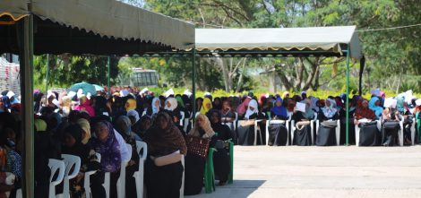

| THE STATE UNIVERSITY OF ZANZIBAR (SUZA) | |
|---|---|
| To stay in this page | To link on another page |
|  |
The State University of Zanzibar (SUZA) was established by Act No. 8 of 1999 of the Zanzibar House of Representatives which was then amended by Act No. 11 of 2009, and further re-amended by Act No. 7 of 2016. The latter amendment has justified SUZA to merge with other Zanzibar higher learning institutions; these are the then Zanzibar Institute of Financial Administration (ZIFA), College of Health Sciences (CHS) and the Zanzibar Institute of Tourism Development (ZIToD). His Excellency Dr. Ali Mohamed Shein, the President of Zanzibar and Chairman of the Revolutionary Council is the Chancellor of the University. The University became operational in September 2001. |
|
Copyright © 2022 The State University of Zanzibar |